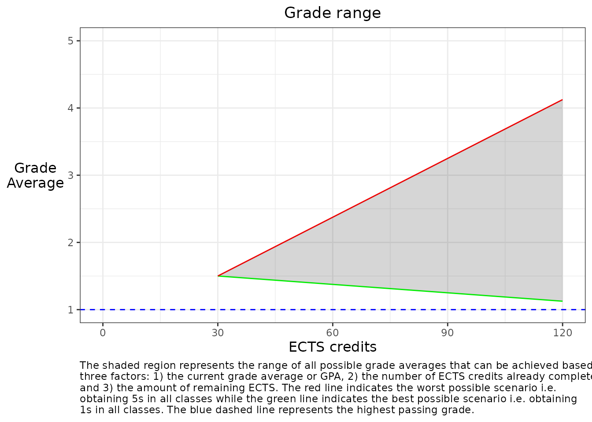

gradecast
gradecast.RmdWhat is {gradecast}?
This package allows someone to estimate the grade range they can expect to achieve in a program based on their current grade and the number of ECTS they have completed. The grade range is calculated based on the best and worst possible outcomes for the remaining ECTS.
The basic assumption of this package is that grading follows the standard German university grading system, where 1 is the best grade and 5 is the worst. The user, however, can specify the best and worst possible grades in the program, and the package will calculate the grade range based on these values.
Calculating the grade range
To calculate the best and worst possible grade outcomes based on the
current grade and the number of ECTS credits already completed, the
calculate_grade_range() function is used. This function
takes the following arguments:
-
completed_ects: the number of ECTS credits already completed -
current_grade: the current grade average -
remaining_ects: the number of ECTS credits remaining to complete -
max_passing_grade: the best possible grade -
min_passing_grade: the worst possible grade
The function returns a named numeric vector with two elements:
best_outcome and worst_outcome. These values
represent the best and worst possible grade averages that can be
achieved based on the input parameters.
As an example, let’s calculate the grade range for a student who has completed 30 ECTS credits, has a current grade average of 1.5, and has 90 ECTS credits remaining to complete. We will assume that the best possible grade is 1 and the worst possible grade is 5 as per the German grading system.
completed <- 30
grade <- 1.5
remaining <- 90
calculate_grade_range(completed, grade, remaining,
max_passing_grade = 1, min_passing_grade = 5)
#> best_outcome worst_outcome
#> 1.125 4.125Plotting the grade range
The plot_grade_range() function is used to create a plot
of the grade range. This function takes the following arguments:
-
completed_ects: the number of ECTS credits already completed -
current_grade: the current grade average -
remaining_ects: the number of ECTS credits remaining to complete -
max_passing_grade: the best possible grade -
min_passing_grade: the worst possible grade -
show_caption: whether or not to display the text caption -
caption_width: text width for the caption
The function returns a ggplot2 object that visualizes the grade range. The shaded region represents the range of all possible grade averages that can be achieved based on the input parameters. The red line indicates the worst possible scenario, i.e., obtaining the worst possible grade in all classes, while the green line indicates the best possible scenario, i.e., obtaining the best possible grade in all classes. The blue dashed line represents the highest passing grade.
Using the same scenario from the previous example, we can use the
plot_grade_range() function to visualize the grade
range.
plot_grade_range(completed, grade, remaining,
max_passing_grade = 1, min_passing_grade = 5,
caption_width = 100)
Note: this function actually wraps the
calculate_grade_range() function and creates a ggplot2
object based on the results (hence the reason for having many of the
same arguments). The ggplot2 object can be further customized using the
standard ggplot2 syntax.
Building the caption
The caption_builder() function is used to build the text
caption for the grade range plot. The caption can be optionally turned
off on the ggplot2 object, which is useful when the text is not needed
or rendered well on the image file. Instead, the Shiny app creates a
separate text box for the caption. The function takes the following
arguments:
-
min_passing_grade: the worst possible grade -
max_passing_grade: the best possible grade -
caption_width: text width for the caption -
show_caption: whether or not to display the text caption
The function returns a character string that contains the text for the caption.
As an example, let’s build the caption for the grade range plot with the worst possible grade of 5 and the best possible grade of 1.
caption_builder(min_passing_grade = 5, max_passing_grade = 1,
caption_width = 150, show_caption = TRUE)
#> [1] "The shaded region represents the range of all possible grade averages that can be achieved based on three factors: 1) the current grade average\nor GPA, 2) the number of ECTS credits already completed, and 3) the amount of remaining ECTS. The red line indicates the worst possible scenario\ni.e. obtaining 5s in all classes while the green line indicates the best possible scenario i.e. obtaining 1s in all classes. The blue dashed line\nrepresents the highest passing grade."Miscellaneous: Convert to “Freedom Units”
The package also includes a function
convert_to_freedom_units() that converts grades from the
German scale (1-5) to the American scale (4-0). This function takes a
grade on the German scale as an argument and returns the equivalent
grade on the American scale.
As an example, let’s convert a grade of 1.5 on the German scale to the American scale.
convert_to_freedom_units(1.5)
#> [1] 3.5Shiny App
The package also includes a Shiny app that allows users to interactively explore the grade range based on their input parameters. The app is organized and built according to the opinionated {golem} package structure, which provides a robust and scalable framework for building Shiny applications.
The application can be launched using the following command:
gradecast::run_app()The app consists of several modules that allow users to input their current grade, the number of ECTS credits already completed, the number of ECTS credits remaining to complete, and the best and worst possible grades in the program. The app then calculates and visualizes the grade range based on these inputs.